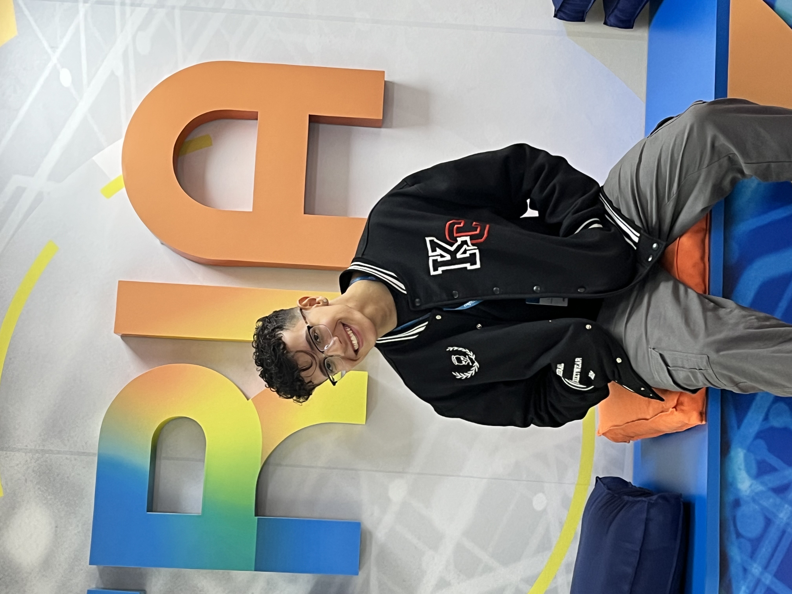
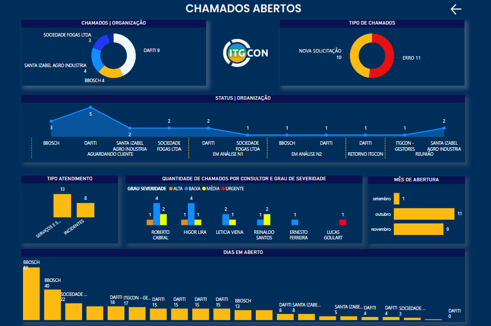
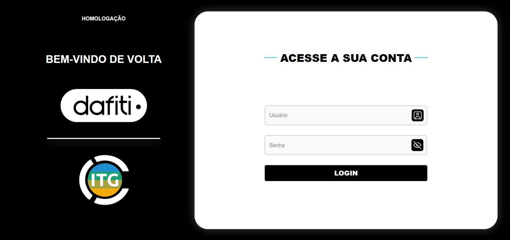
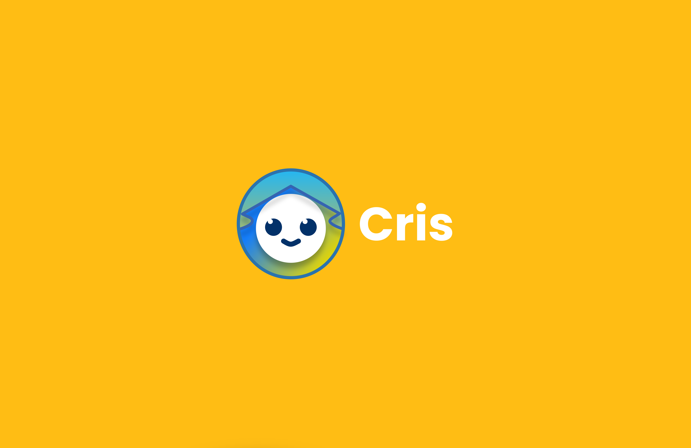

Olá, eu sou o Lucas Teixeira!
Desenvolvedor
Java - JavaScript
- React
- GIT
- TypeScript
- Postman
- Scrum
- Jira
- Figma
- UX/UI
- Maven
- MongoDB
- SQL Server
- Spring Boot
- Power BI
- SAP
- API REST
- MVC
- Microsoft Power Platform
- JavaScript
- React
- GIT
- TypeScript
- Postman
- Scrum
- Jira
- Figma
- UX/UI
- Maven
- MongoDB
- SQL Server
- Spring Boot
- Power BI
- SAP
- API REST
- MVC
- Microsoft Power Platform
Skills
React
JavaScript | TypeScript
BootStrap
Spring Boot | Maven
Data Base | Analytics | PostMan
Power BI | Power Apps | Power Automate
SAP
Soft Skills
Trabalho em Equipe
Aprendizado Contínuo
Resolução de problemas
Criatividade e Inovação
Gestão de Tempo
Pensamento crítico
Adaptabilidade
Empatia
Projetos
Power BI
Foram desenvolvidos relatórios em tempo real a partir da API do sistema utilizado, eliminando a necessidade de planilhas manuais. O projeto incluiu dashboards de chamados em aberto, chamados encerrados (com análise de tempo e desempenho dos consultores) e controle de apontamentos, antes feitos manualmente. Parte dos dados foi armazenada diretamente no Power BI, e, para cenários mais complexos, foi utilizado SQL Server como apoio.
Destaques:
Dados em tempo real: Integração direta com a API do sistema, sem uso de planilhas.
Análises de desempenho: Visão clara sobre tempo de resolução e produtividade dos consultores.
Uso de SQL Server: Armazenamento eficiente para relatórios com maior volume de dados.
Power Apps

Com o objetivo de modernizar o processo de criação de Ordens de Serviço, foi desenvolvido um aplicativo personalizado no Power Apps, substituindo o modelo anterior feito manualmente em documentos Word. A nova solução tem como objetivo organização, padronização e rastreabilidade às informações, com formulários eletrônicos configurados com campos obrigatórios e lógica de preenchimento validada. Os dados passaram a ser armazenados em listas no SharePoint, organizadas de forma relacional para facilitar a visualização e o controle. Além disso, foi implementado um fluxo no Power Automate para gerar automaticamente um PDF com as informações inseridas no formulário.
Destaques:
Formulário eletrônico customizado: Criado no Power Apps com lógica de obrigatoriedade e interface intuitiva.
Automação com Power Automate: Geração automática de PDFs e envio por e-mail.
Estrutura relacional em SharePoint: Dados organizados em múltiplas listas conectadas, com fácil manutenção e escalabilidade.
Monitor Web
Participei da evolução de um sistema Web para visualização e gestão de NF-e, certificados, XML, PDFs, criação de usuários, entre outras funcionalidades. Ao ingressar no projeto, identifiquei junto com a equipe diversos gargalos de desempenho que impactavam diretamente na experiência dos usuários, como lentidão no carregamento de páginas e instabilidade no servidor. Conduzimos uma série de melhorias técnicas que resultaram em um aumento significativo na performance geral do monitor. As requisições passaram a ser processadas de forma mais eficiente e estável, eliminando as quedas de servidor. Além disso, houve uma reformulação completa da interface do usuário, com novas telas que deram identidade ao produto e elevaram a experiência de uso.
Destaques:
Otimização de desempenho: reduzindo drasticamente o tempo de resposta e eliminando quedas do servidor.
Evolução do front-end: criação de novas telas, melhoria na navegação e reforço da identidade visual do sistema.
Stack robusta: Spring Boot, Java 8, Maven no back-end; React, Bootstrap e Axios no front-end.
Chat com Inteligência Artificial
Participei de um projeto para a Crefisa, conquistado por meio de um torneio de tecnologia cujo objetivo era apresentar a melhor solução para a empresa. A equipe vencedora teria a oportunidade de desenvolver o projeto dentro da empresa como parte de um estágio. Fomos um dos grupos selecionados e demos vida à nossa proposta. A solução consistia em um chat com inteligência artificial voltado para o atendimento de dúvidas frequentes, auxiliando tanto os clientes quanto os atendentes internos da instituição. O foco era proporcionar respostas rápidas, automatizadas e melhorar a experiência de suporte.
Destaques:
Utilização da Azure: solução em nuvem para inteligência artificial e hospedagem do ambiente web.
Responsável pela interface: criação de apresentações, protótipos no Figma e codificação em HTML, CSS e JavaScript.
Reconhecimento em torneio: projeto selecionado como vencedor em desafio de tecnologia promovido pela Crefisa.
Trajetória
CREFISA - Estagiário de Projetos
Utilização do Figma para criação de telas.
Aplicação da Azure para criação de inteligência artificial.
Web services e MongoDB.
Realização de documentação.
Criação de apresentações para divulgação do projeto.
HTML, CSS e JavaScript.
Metodologia Ágil / JIRA.
ITGCON - Desenvolvedor Java Trainee
Integração com o banco de dados e consumo de APIs.
Realizando melhorias no Design.
Corrigindo bugs e melhorando o desempenho.
Criação de dashboards com Power BI e Chartjs.
Atendimento de chamados sobre Mensageria.
Criação e manutenção de APIs.
Debugando Minha Jornada
Minha jornada na área de tecnologia começou aos 20 anos, logo após o período da pandemia, quando as oportunidades no mercado começaram a surgir novamente. Antes disso, atuei na área financeira, mas sempre tive o sonho de participar do desenvolvimento de sistemas e projetos de tecnologia. Esse desejo se concretizou quando ingressei na faculdade de Análise e Desenvolvimento de Sistemas, onde participei de um torneio de tecnologia promovido pela instituição. Nosso projeto foi um dos vencedores, o que me garantiu uma vaga de estágio e marcou o início da minha carreira em TI. Desde então, venho evoluindo não apenas tecnicamente, mas também no desenvolvimento das minhas soft skills, aprendendo a trabalhar em equipe, me comunicar melhor e lidar com desafios de forma colaborativa. Tive a oportunidade de atuar com metodologias ágeis, como Scrum, e ferramentas como o Jira, que me ajudaram a entender melhor a dinâmica de projetos reais. Fora do mundo da tecnologia, sou uma pessoa que valoriza muito os amigos, está sempre disposta a ajudar quando tem conhecimento para contribuir, e que busca manter uma rotina saudável, com exercícios físicos e boas práticas no dia a dia. Também adoro viajar e conhecer novos lugares, o que me ajuda a manter a mente aberta, enxergar diferentes perspectivas e trazer mais criatividade para tudo o que faço.